01钩子 / 问题
用三天人工录入建立损失
开场讲一家女装品牌每周跨平台复制评论、手工录入 Excel，数据清洗耗时三天。具体角色和损失让商业问题可感知。
电商评论整理可以从人工录入 Excel，升级为自动抓取、情感分类、商品识别、客服建议和群消息提醒的多维表流程。
这条视频采用标准商业案例结构：先放大三天人工成本，再展示模板、分析和推送能力，最后用十分钟与96%效率提升做回报。问题是开头暗示自动抓取，教程却要求上传已有评价数据的 Excel，评论也直接质疑前置录入成本。
电商评论整理可以从人工录入 Excel，升级为自动抓取、情感分类、商品识别、客服建议和群消息提醒的多维表流程。
不是复述内容，而是标出每一段承担的叙事任务、观众问题和画面证据。
开场讲一家女装品牌每周跨平台复制评论、手工录入 Excel，数据清洗耗时三天。具体角色和损失让商业问题可感知。
她引出钉钉多维表及一百多个电商模板，声称能抓取评价、自动分析情绪并识别商品，然后提出‘到底怎么用’。
教程打开多维表的电商评价系统，上传已有评论数据的 Excel，系统自动识别正负中性、对应商品和客服解决建议。
系统继续汇总物流、产品等差评原因，生成可视图表，并在差评达到五条时自动推送群消息。
回到同一家女装品牌，宣称数据清洗从三天缩短到十分钟、效率提升96%，让开场损失形成闭环。
结尾把工具定义为从人工 Excel 到智能管家的跨越，并强调小店也能免费获得数据分析能力。
下列章节覆盖视频的主要论点、步骤与结果；每段都保留时间码和关键画面。
开场讲一家女装品牌每周跨平台复制评论、手工录入 Excel，数据清洗耗时三天。具体角色和损失让商业问题可感知。
她引出钉钉多维表及一百多个电商模板，声称能抓取评价、自动分析情绪并识别商品，然后提出‘到底怎么用’。
教程打开多维表的电商评价系统，上传已有评论数据的 Excel，系统自动识别正负中性、对应商品和客服解决建议。
系统继续汇总物流、产品等差评原因，生成可视图表，并在差评达到五条时自动推送群消息。
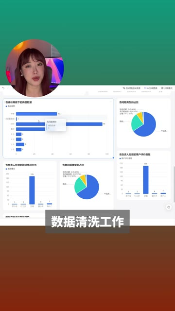
回到同一家女装品牌，宣称数据清洗从三天缩短到十分钟、效率提升96%，让开场损失形成闭环。
结尾把工具定义为从人工 Excel 到智能管家的跨越，并强调小店也能免费获得数据分析能力。
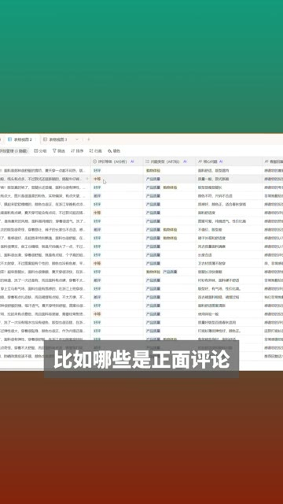
短视频每 1 秒、常规视频每 2 秒、超长视频每 3 秒取一帧。
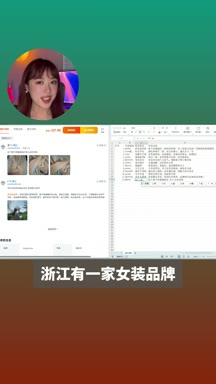
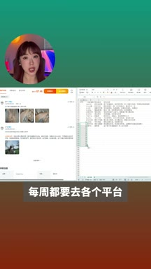
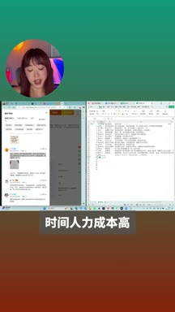
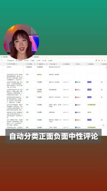
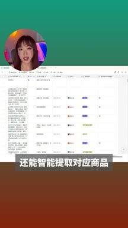
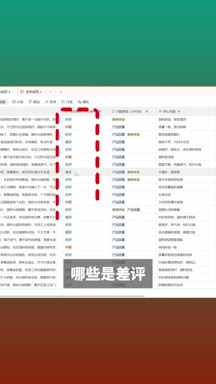
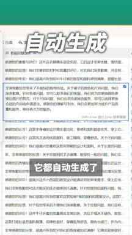
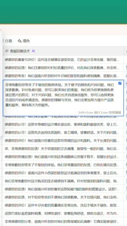
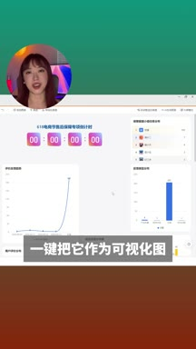
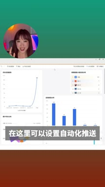
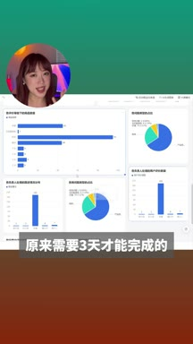
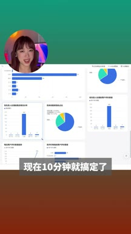
小红书官方 zh-CN 字幕 · 25 段 · 633 字。字幕只记录声音；工具名、界面文字和结果含义必须结合上方视觉知识地图复核。
三天的工作十分钟搞定电商老板们的噩梦，终于有救了，浙江有一家女装品牌
她们的运营啊，每周都要去各个平台一条一条的复制商品评论
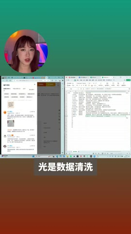
然后手动录入到excel表格里，光是数据清洗就要整整花上三天的时间
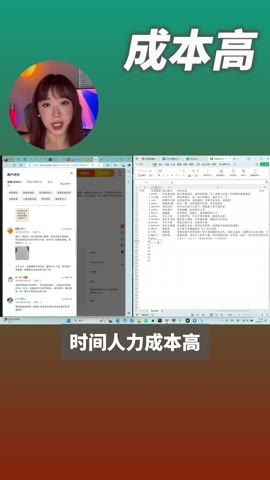
时间人力成本高，效率也低
但我发现钉钉有一个颠覆性的产品可以完美的解决这个问题，那就是多维表
它针对电商场景推出了一百多个模板
比如就拿这个折磨老板的抓取评价来说，多表可以自动的抓取天猫淘宝的评价数据
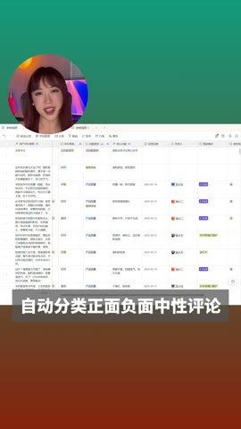
然后自动帮你分析评价。自动分类正面负面中性评论
还能智能提取对应商品，那这套系统到底怎么用呢？
来手把手教你，我们打开钉钉，点击左侧这里的多维表
启动电商评价ai系统，这个模板进来以后上传有评价数据的excel表格
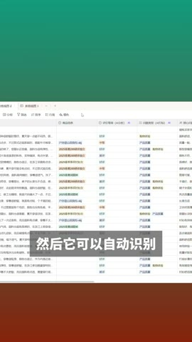
Ai会自动提取里面的评价，然后它可以自动识别这套评价是正面还是负面
对应的商品是什么。客服应该如何解决都写得清清楚楚
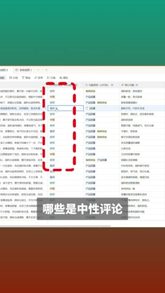
比如哪些是正面评论，哪些是差评，哪些是中性评论，以及在这些差评里
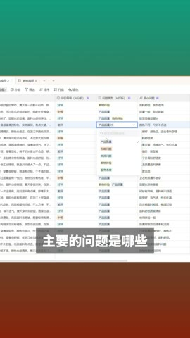
主要的问题是哪些？什么物流啊
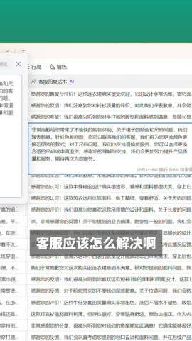
产品问题呀，客服应该怎么解决啊？
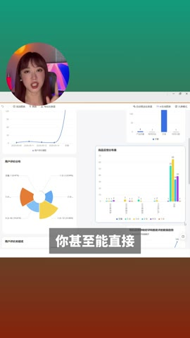
它都自动生成了。你甚至可以直接一键把它作为可视画图
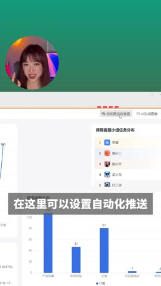
对了还有个小功能，在这里可以设置自动化推送，比如一旦有了差评五条
他就会自动发消息到群里，这样就不用时时刻刻盯着后台了
真的全流程自动化真的太强了
就是这家浙江女装品牌，用了这套系统之后，原来需要三天才能完成的数据清洗工作
现在十分钟就能搞定了，效率直接提升了百分之九十六
说实话，这种人工excel到智能化管家的跨越
让我想到了以前只有大厂才有的数据分析能力，现在连小店都能免费拥有
朋友们快用起来吧
内容具有明显产品推广属性。‘自动抓取’与教程中的上传Excel存在口径差异，三天、十分钟和96%效率提升属于案例主张，无法从公开页面独立验证。
打开小红书原帖 ↗